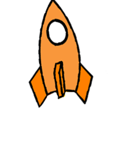

- Height:H: 10 Km
- Fuel:F: 10%
- Speed:S: 10 Km/h

Para ganar necesita aterrizar a una velocidad menor de 5 Km/h, para frenar hay que apretar la barra espaciadora en versión escritorio, pulsar la pantalla en dispositivos móviles.
Fondo1Fondo2
Nave1Nave2
Acerca de...
Fondo1Fondo2
Nave1Nave2
Acerca de...